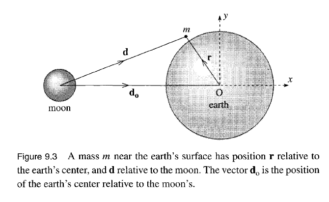

Tidal Forces#

Consider a moon of mass \(M\) and Earth of mass \(M_\oplus\). We would like to understand how tidal forces are a contribution to an acceleration unbeknownst to the observer on Earth. On Earth let’s have a test mass \(m\) say a droplet of water on the ocean. The forces in some convenient reference frame \(S_0\) (e.g., the background star) are the Earth’s gravitational force, moon’s gravitational force, and non-gravitational force (e.g., boyancy)
\(\mathbf{F}_g\) : Gravitational forces on the particle which include Earth and Moon’s gravitational force
\(\mathbf{F}_{ng}\) : Non-gravitational forces
We define \(\mathbf{A}\) in some convenient reference frame like the background stars. In this frame we see the Moon and Earth orbitting each other. Since \(A\) is the force non-aparrent to the mass \(m\), it must be the forces between Earth and the Moon. So \(\mathbf{A}\) is the force on the \(S\) frame (Earth) thus moon’s gravitational pull at distance \(\mathbf{d_0}\)
Together Newton’s second law becomes,
\(d\) : Distance from test mass \(m\) to moon
\(d_0\) : Distance between Earth (center) and moon.
\(F_t\) : Tidal force, explained below
The three forces are summarized to the Earth’s gravitational force and non-gravitational force that one would naturally compute if on Earth. Then there exist a ficticious force and a non-apparent force (the moon’s) which together becomes a differential force called the tidal force. Differential because the forces point opposite together and the interesting case is when the two forces are not equal (if equal then we get the typical inertial problem which isn’t so interesting).
Note: It is important to note that the tidal force is not trival, one does not expect that if the particle is at a distance farther from the Moon \(d > d_0\), the test mass will feel a push not a pull from the tidal force since \(F_t > 0\).
Because of this fact, the tidal bulge is not one sided. There exist one both at \(d < d_0\) (trivial) and \(d > d_0\) (non-trivial). The two tidal bulge explains why there are two high tides every day (though this requires the Earth to rotate).
Tidal Height#
We will now derive an important magntiude of tidal forces which is the tidal height defined as the difference in low and high tides.
Proof#
The tidal height exist at the equipotential surfaces. Consider the Earth’s gravitational force and tidal force in terms of potential. Because the forces are conservative we can write it as the gradient of a potential energy,
\(U_\oplus\): Earth gravitational potential at some distance \(R + h\) where \(h\) is the height
\(U_t\): Tidal gravitational potential
\(x\): Length fo the \(\mathbf{x}\) vector
Because the forces are normal to the surface of the ocean and are competing forces (Earth and moon both pull on the test mass), there exist a equipotential surface where the potential along some height is constant \(U(h) = \text{const.}\)
\(U(h)\) : total potential where we set the zeropoint at low tide \(h=0\)
This signifies that the potential is purely a function of \(h\).
The height can be found by equating the potentials during low tide and high tide:
Recall the difference of potential of particle on Earth is,
The difference of potential in the tidal force is,
\(d_\text{high}\) : distance away from the moon at high tide. This is \(d_\text{high} = d_0 - (h + R_\oplus)\)
\(x_\text{high}\) : \(x\) position at high tide which is \(x_\text{high} = - (h + R_\oplus)\)
\(d_\text{low}\) : distance away from the moon at high tide. This is \(d_\text{low} = \sqrt{d_0^2 + (R_\oplus + h)^2}\)
\(x_\text{low}\) : \(x\) position at low tide which is \(x = 0\)
Let’s take the approximation that \(R_\oplus + h = R_\oplus\) since \(R_\oplus \gg h\) and \(R_\oplus \ll d_0\) but this time take it as a binomial expansion for \(1 + R_\oplus/d_0\)
Setting the two potentials equal to eachother,